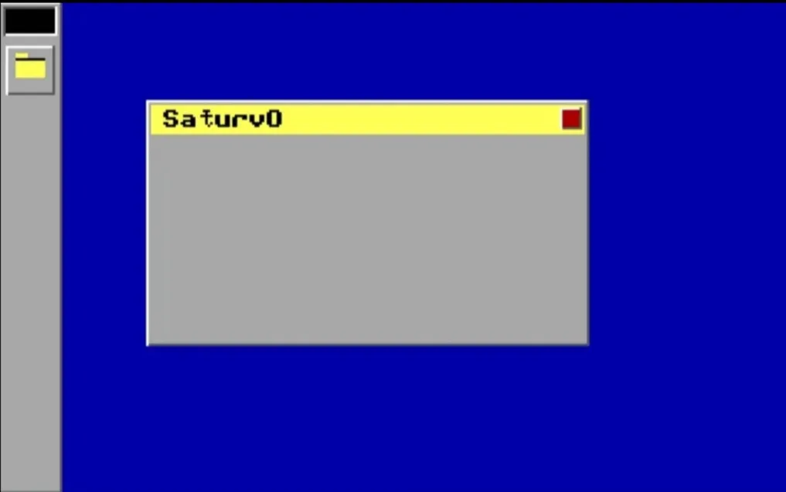
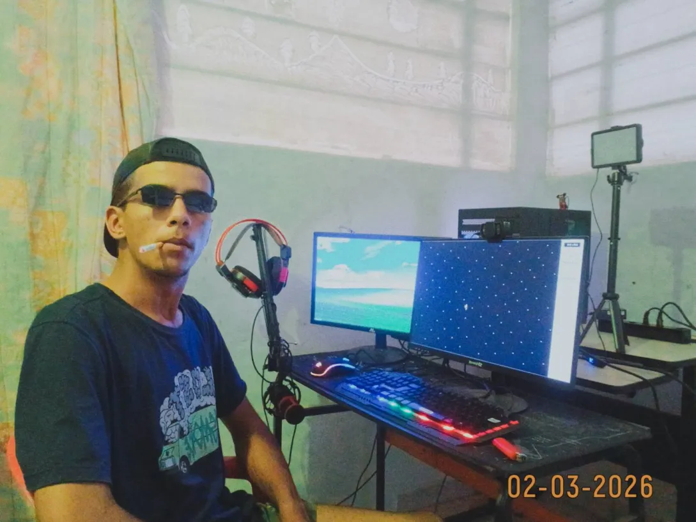

Sobre & Origem
Me chamo João V.Gabriel, nascido em 2005. Iniciei o desenvolvimento do SaturvOS no dia 15 de dezembro de 2025. Após um ano inteiro focado em entender qual o sentido de aprender programar, se você não vai trabalhar na área da cibersegurança — estudando C, Assembly x86 e a arquitetura de baixo nível —, decidi que era isso que eu queria. Construir meu próprio espaço do zero, sem depender das abstrações e do lixo de sistemas modernos.

Desde sempre gostei do Planeta Saturno; ele sempre foi meu maior amigo no universo, junto com o Doke, meu guaxinim amarelo de pelúcia. Quase sempre ficávamos a noite inteira planejando esse projeto e jogando Diablo num emulator de PSX.

Programar em 32-bit direto no hardware não é sobre ser diferente. É sobre autonomia real. O SaturvOS é a manifestação de um castelo virtual próprio: uma máquina onde cada instrução existe porque eu quis que ela estivesse ali. Me sinto solitário na maior parte do tempo, mas sem precisar vestir nenhuma máscara social medíocre.